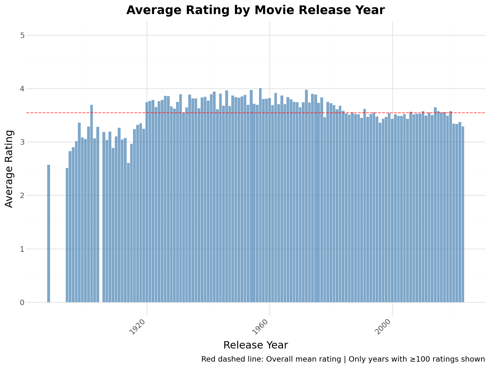
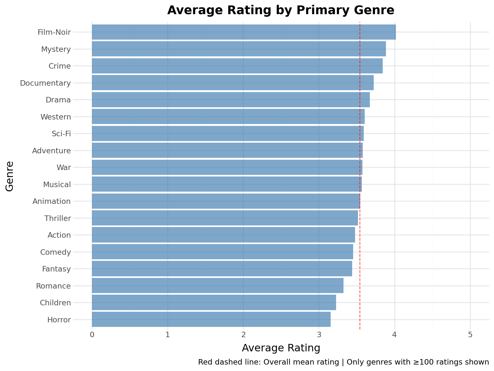
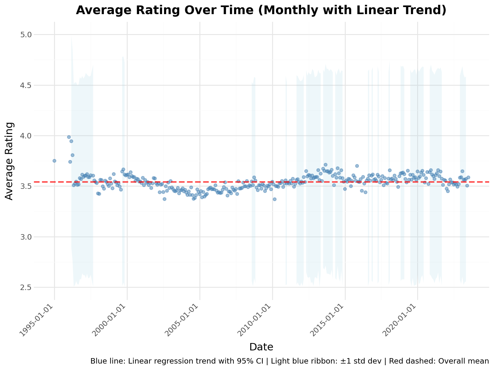
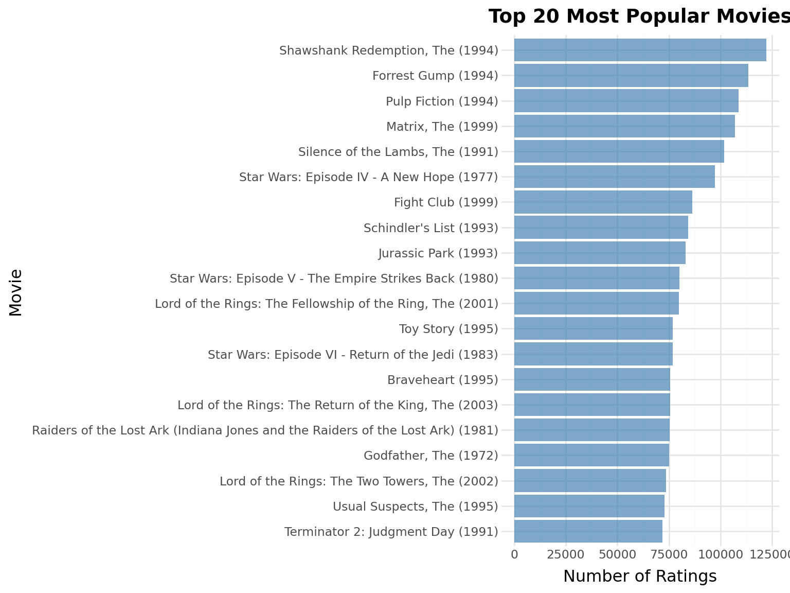
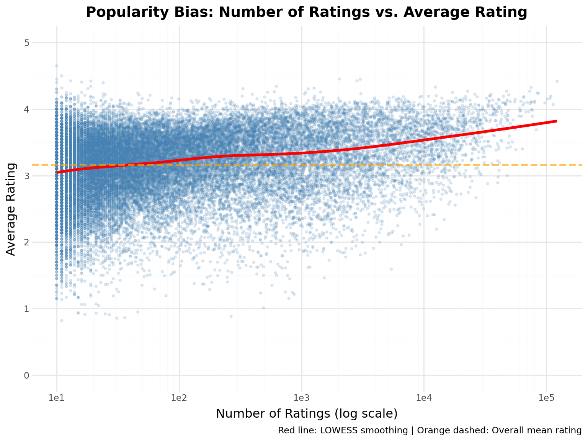
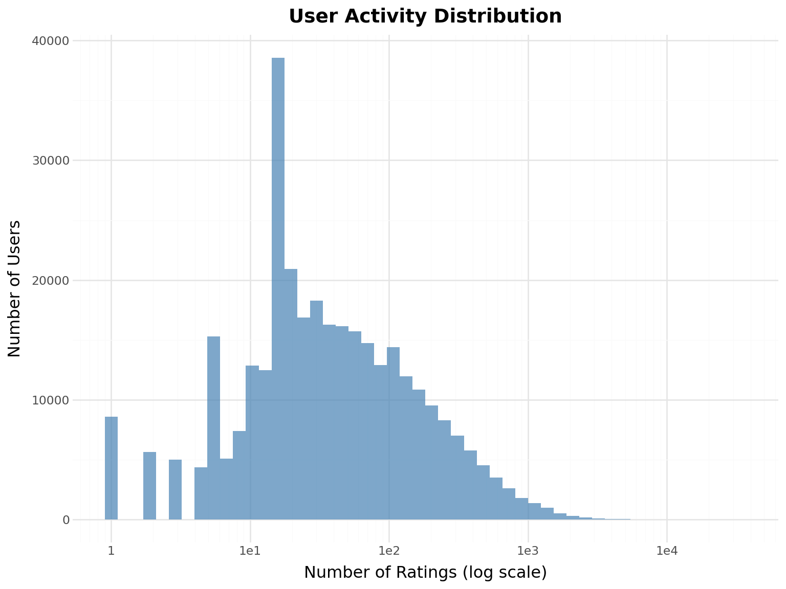
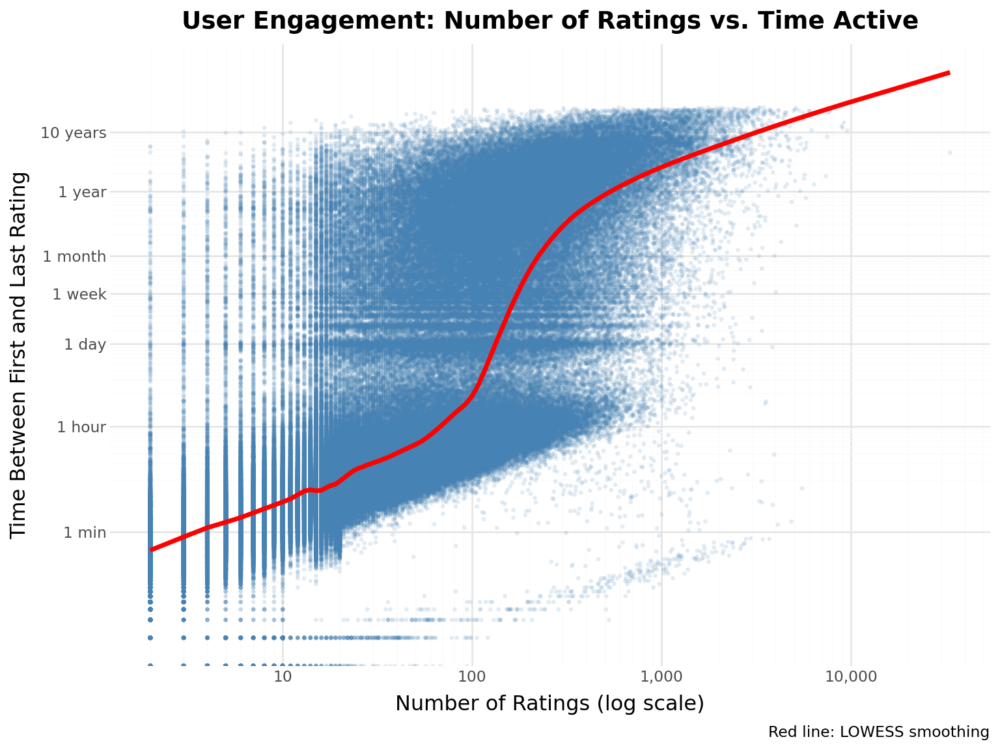

movies_stats =f"""**Movies Dataset Overview:**- Total movies: {len(movies):,}- Columns: {", ".join(movies.columns)}- Unique genres: {len(set([g for genres in movies["genres"].to_list() for g in genres if g !="(no genres listed)"])):,}"""display(Markdown(movies_stats))display(movies.head(10))
Movies Dataset Overview:
Total movies: 86,537
Columns: movie_id, title, genres
Unique genres: 19
shape: (10, 3)
movie_id
title
genres
i64
str
list[str]
1
"Toy Story (1995)"
["Adventure", "Animation", … "Fantasy"]
2
"Jumanji (1995)"
["Adventure", "Children", "Fantasy"]
3
"Grumpier Old Men (1995)"
["Comedy", "Romance"]
4
"Waiting to Exhale (1995)"
["Comedy", "Drama", "Romance"]
5
"Father of the Bride Part II (1…
["Comedy"]
6
"Heat (1995)"
["Action", "Crime", "Thriller"]
7
"Sabrina (1995)"
["Comedy", "Romance"]
8
"Tom and Huck (1995)"
["Adventure", "Children"]
9
"Sudden Death (1995)"
["Action"]
10
"GoldenEye (1995)"
["Action", "Adventure", "Thriller"]
Ratings Dataset
Show code
avg_rating = ratings["rating"].mean()ratings_stats =f"""**Ratings Dataset Overview:**- Total ratings: {len(ratings):,}- Average rating: {avg_rating:.2f}- Rating range: {ratings["rating"].min():.1f} - {ratings["rating"].max():.1f}- Time span: {ratings["timestamp"].min()} to {ratings["timestamp"].max()}"""display(Markdown(ratings_stats))display(ratings.head(10))
Ratings Dataset Overview:
Total ratings: 33,832,162
Average rating: 3.54
Rating range: 0.5 - 5.0
Time span: 1995-01-09 11:46:44 to 2023-07-20 08:53:33
shape: (10, 4)
user_id
movie_id
rating
timestamp
i64
i64
f64
datetime[μs]
1
1
4.0
2008-11-03 17:52:19
1
110
4.0
2008-11-05 06:04:46
1
158
4.0
2008-11-03 17:31:43
1
260
4.5
2008-11-03 18:00:04
1
356
5.0
2008-11-03 17:58:39
1
381
3.5
2008-11-03 17:41:45
1
596
4.0
2008-11-03 17:32:04
1
1036
5.0
2008-11-03 18:07:06
1
1049
3.0
2008-11-03 17:41:19
1
1066
4.0
2008-11-03 18:29:21
Tags Dataset
Show code
tags_stats =f"""**Tags Dataset Overview:**- Total tags: {len(tags):,}- Unique tags: {tags["tag"].n_unique():,}- Users who tagged: {tags["user_id"].n_unique():,}- Movies tagged: {tags["movie_id"].n_unique():,}"""display(Markdown(tags_stats))display(tags.head(10))
Tags Dataset Overview:
Total tags: 2,328,315
Unique tags: 153,951
Users who tagged: 25,280
Movies tagged: 53,452
shape: (10, 4)
user_id
movie_id
tag
timestamp
i64
i64
str
datetime[μs]
10
260
"good vs evil"
2015-05-03 15:22:38
10
260
"Harrison Ford"
2015-05-03 15:21:45
10
260
"sci-fi"
2015-05-03 15:22:18
14
1221
"Al Pacino"
2011-07-25 13:32:36
14
1221
"mafia"
2011-07-25 13:32:26
14
58559
"Atmospheric"
2011-07-24 18:00:39
14
58559
"Batman"
2011-07-24 17:59:51
14
58559
"comic book"
2011-07-24 17:59:58
14
58559
"dark"
2011-07-24 18:00:28
14
58559
"Heath Ledger"
2011-07-24 18:00:04
Links Dataset
Show code
links_stats =f"""**Links Dataset Overview:**- Total links: {len(links):,}- Movies with IMDB IDs: {links["imdb_id"].null_count():,}- Movies with TMDB IDs: {links["tmdb_id"].null_count():,}"""display(Markdown(links_stats))display(links.head(10))
Links Dataset Overview:
Total links: 86,537
Movies with IMDB IDs: 0
Movies with TMDB IDs: 126
shape: (10, 3)
movie_id
imdb_id
tmdb_id
i64
i64
i64
1
114709
862
2
113497
8844
3
113228
15602
4
114885
31357
5
113041
11862
6
113277
949
7
114319
11860
8
112302
45325
9
114576
9091
10
113189
710
Movie Posters
Show code
posters = pl.read_parquet("../data/shared/posters.parquet")# Calculate coverage by joining with linksmovies_with_posters = links.select(["movie_id", "tmdb_id"]).join(posters, on="tmdb_id", how="inner")posters_stats =f"""**Posters Dataset Overview:**- Total posters: {len(posters):,}- Movies with posters: {movies_with_posters["movie_id"].n_unique():,}- Coverage: {len(movies_with_posters) /len(movies) *100:.1f}% of movies have poster data"""display(Markdown(posters_stats))
Posters Dataset Overview:
Total posters: 84,676
Movies with posters: 84,712
Coverage: 97.9% of movies have poster data
Let’s display a few movie posters from popular movies:
Show code
from recsys_genai.notebook_utils import tmdb_images# Get some popular highly-rated moviespopular_movies = ( ratings.group_by("movie_id") .agg([pl.count("rating").alias("num_ratings"), pl.mean("rating").alias("avg_rating")]) .filter(pl.col("num_ratings") >=100) .filter(pl.col("avg_rating") >=4.0) .sort("num_ratings", descending=True) .head(12) .join(movies, on="movie_id") .join(links.select(["movie_id", "tmdb_id"]), on="movie_id") .join(posters, on="tmdb_id", how="inner"))# Get poster pathsposter_paths = popular_movies["poster_path"].to_list()print(f"Displaying {len(poster_paths)} movie posters from popular highly-rated films:")print()print(" ".join([f"{row['title']}"for row in popular_movies.head(6).to_dicts()]))print()tmdb_images(poster_paths[:6])
Displaying 12 movie posters from popular highly-rated films:
Silence of the Lambs, The (1991) Star Wars: Episode V - The Empire Strikes Back (1980) Lord of the Rings: The Fellowship of the Ring, The (2001) Pulp Fiction (1994) Forrest Gump (1994) Shawshank Redemption, The (1994)
Observation: Most ratings are positive (3.5-5.0). This creates implicit “thumbs up” when rating ≥ 4.0.
Average Rating by Release Year
How do ratings vary by movie release year?
Show code
# Extract year from movie title and calculate average ratingmovies_with_year = movies.with_columns( [pl.col("title").str.extract(r"\((\d{4})\)", 1).cast(pl.Int32).alias("year")]).filter(pl.col("year").is_not_null())# Join with ratings and calculate average rating per yearratings_by_year = ( ratings.join(movies_with_year.select(["movie_id", "year"]), on="movie_id") .group_by("year") .agg([pl.mean("rating").alias("avg_rating"), pl.len().alias("num_ratings")]) .filter(pl.col("num_ratings") >=100) # Filter years with at least 100 ratings .sort("year"))year_stats =f"""**Average Rating by Release Year:**- Years analyzed: {len(ratings_by_year)}- Highest rated year: {ratings_by_year.sort("avg_rating", descending=True)["year"][0]} (avg: {ratings_by_year.sort("avg_rating", descending=True)["avg_rating"][0]:.2f})- Lowest rated year: {ratings_by_year.sort("avg_rating")["year"][0]} (avg: {ratings_by_year.sort("avg_rating")["avg_rating"][0]:.2f})"""display(Markdown(year_stats))
Average Rating by Release Year:
Years analyzed: 130
Highest rated year: 1957 (avg: 4.00)
Lowest rated year: 1894 (avg: 2.51)
Show code
# Create bar chart( ggplot(ratings_by_year, aes(x="year", y="avg_rating"))+ geom_col(fill="steelblue", alpha=0.7)+ geom_hline(yintercept=ratings["rating"].mean(), linetype="dashed", color="red", alpha=0.7)+ labs( title="Average Rating by Movie Release Year", x="Release Year", y="Average Rating", caption="Red dashed line: Overall mean rating | Only years with ≥100 ratings shown", )+ ylim(0, 5)+ theme(axis_text_x=element_text(rotation=45, hjust=1)))

Key Insight: Older movies tend to have slightly higher average ratings, likely due to survivorship bias - only the best old movies remain popular enough to be rated.
Average Rating by Genre
How do ratings vary across different genres?
Show code
# Extract first genre and calculate average ratingmovies_with_genre = movies.with_columns( [pl.col("genres").list.first().alias("primary_genre")]).filter( (pl.col("primary_genre").is_not_null()) & (pl.col("primary_genre") !="(no genres listed)"))# Join with ratings and calculate average rating per genreratings_by_genre = ( ratings.join(movies_with_genre.select(["movie_id", "primary_genre"]), on="movie_id") .group_by("primary_genre") .agg([pl.mean("rating").alias("avg_rating"), pl.len().alias("num_ratings")]) .filter(pl.col("num_ratings") >=100) # Filter genres with at least 100 ratings .sort("avg_rating", descending=True))genre_stats =f"""**Average Rating by Primary Genre:**- Genres analyzed: {len(ratings_by_genre)}- Highest rated genre: {ratings_by_genre["primary_genre"][0]} (avg: {ratings_by_genre["avg_rating"][0]:.2f})- Lowest rated genre: {ratings_by_genre.sort("avg_rating")["primary_genre"][0]} (avg: {ratings_by_genre.sort("avg_rating")["avg_rating"][0]:.2f})"""display(Markdown(genre_stats))
Average Rating by Primary Genre:
Genres analyzed: 18
Highest rated genre: Film-Noir (avg: 4.02)
Lowest rated genre: Horror (avg: 3.16)
Show code
# Create horizontal bar chart( ggplot(ratings_by_genre, aes(x="reorder(primary_genre, avg_rating)", y="avg_rating"))+ geom_col(fill="steelblue", alpha=0.7)+ geom_hline(yintercept=ratings["rating"].mean(), linetype="dashed", color="red", alpha=0.7)+ coord_flip()+ labs( title="Average Rating by Primary Genre", x="Genre", y="Average Rating", caption="Red dashed line: Overall mean rating | Only genres with ≥100 ratings shown", )+ ylim(0, 5))

Key Insight: Film-Noir, Mystery and Crime films tend to receive higher ratings, while Horror and Romance tend to be rated lower. This reflects both audience preferences and the quality distribution within genres.
Rating Trends Over Time
How have user ratings changed over time?
Show code
# Extract year-month from timestamp and calculate monthly statisticsmonthly_ratings = ( ratings.with_columns([pl.col("timestamp").dt.truncate("1mo").alias("month")]) .group_by("month") .agg( [ pl.mean("rating").alias("avg_rating"), pl.std("rating").alias("std_rating"), pl.len().alias("num_ratings"), ] ) .sort("month"))# Calculate upper and lower bounds for standard deviationmonthly_ratings = monthly_ratings.with_columns( [ (pl.col("avg_rating") + pl.col("std_rating")).alias("upper_bound"), (pl.col("avg_rating") - pl.col("std_rating")).alias("lower_bound"), ])trends_stats =f"""**Rating Trends Statistics:**- Time period: {monthly_ratings["month"].min()} to {monthly_ratings["month"].max()}- Overall average rating: {ratings["rating"].mean():.3f}- Highest monthly average: {monthly_ratings["avg_rating"].max():.3f}- Lowest monthly average: {monthly_ratings["avg_rating"].min():.3f}- Average monthly std dev: {monthly_ratings["std_rating"].mean():.3f}"""display(Markdown(trends_stats))
Rating Trends Statistics:
Time period: 1995-01-01 00:00:00 to 2023-07-01 00:00:00
Overall average rating: 3.543
Highest monthly average: 3.985
Lowest monthly average: 3.370
Average monthly std dev: 1.061
Show code
# Prepare data for plottingtrends_df = monthly_ratings# Create time series plot with LM smoothing and standard deviation ribbon( ggplot(trends_df, aes(x="month", y="avg_rating"))+ geom_ribbon(aes(ymin="lower_bound", ymax="upper_bound"), alpha=0.2, fill="lightblue")+ geom_point(color="steelblue", size=1.5, alpha=0.5)+ geom_hline( yintercept=ratings["rating"].mean(), linetype="dashed", color="red", size=1, alpha=0.7 )+ labs( title="Average Rating Over Time (Monthly with Linear Trend)", x="Date", y="Average Rating", caption="Blue line: Linear regression trend with 95% CI | Light blue ribbon: ±1 std dev | Red dashed: Overall mean", )+ ylim(2.5, 5)+ theme(axis_text_x=element_text(rotation=45, hjust=1)))

Key Insight: Average ratings show remarkable stability over time (mostly between 3.4-3.7), suggesting consistent rating behavior across the platform’s history. The narrow standard deviation band indicates users broadly agree on rating patterns.
Popularity Bias
Which movies are most popular?
Show code
# Calculate movie popularitytop_n =20popularity = ( ratings.group_by("movie_id") .agg(pl.len().alias("count")) .join(movies, on="movie_id") .sort("count", descending=True) .head(top_n))# Create horizontal bar chart( ggplot(popularity, aes(x="reorder(title, count)", y="count"))+ geom_col(fill="steelblue", alpha=0.7)+ coord_flip()+ labs(title=f"Top {top_n} Most Popular Movies", x="Movie", y="Number of Ratings"))

Key Insight: Heavy concentration in blockbusters - the “long tail” problem!
Popularity Bias Analysis
Does popularity correlate with quality? Let’s investigate.
Show code
# Calculate popularity and average rating for each moviemovie_stats = ( ratings.group_by("movie_id") .agg([pl.len().alias("num_ratings"), pl.mean("rating").alias("avg_rating")]) .join(movies.select(["movie_id", "title"]), on="movie_id"))# Filter movies with at least 10 ratings to reduce noisemovie_stats_filtered = movie_stats.filter(pl.col("num_ratings") >=10)bias_stats =f"""**Popularity Bias Statistics:**- Movies with ≥10 ratings: {len(movie_stats_filtered):,}- Correlation (popularity vs. avg rating): {movie_stats_filtered.select(pl.corr("num_ratings", "avg_rating"))[0, 0]:.3f}- Most popular movie: {movie_stats.sort("num_ratings", descending=True)["title"][0]} ({movie_stats.sort("num_ratings", descending=True)["num_ratings"][0]:,} ratings)- Highest rated (≥100 ratings): {movie_stats.filter(pl.col("num_ratings") >=100).sort("avg_rating", descending=True)["title"][0]} (avg: {movie_stats.filter(pl.col("num_ratings") >=100).sort("avg_rating", descending=True)["avg_rating"][0]:.2f})"""display(Markdown(bias_stats))
Popularity Bias Statistics:
Movies with ≥10 ratings: 32,021
Correlation (popularity vs. avg rating): 0.180
Most popular movie: Shawshank Redemption, The (1994) (122,296 ratings)
Highest rated (≥100 ratings): Planet Earth II (2016) (avg: 4.45)
Show code
# Prepare dataplot_data = movie_stats_filtered# Create scatter plot with LOWESS smoothing( ggplot(plot_data, aes(x="num_ratings", y="avg_rating"))+ geom_point(alpha=0.15, size=0.8, color="steelblue")+ geom_smooth(method="lowess", color="red", size=1.5, se=False, span=0.3)+ geom_hline( yintercept=plot_data["avg_rating"].mean(), linetype="dashed", color="orange", size=1, alpha=0.7, )+ labs( title="Popularity Bias: Number of Ratings vs. Average Rating", x="Number of Ratings (log scale)", y="Average Rating", caption="Red line: LOWESS smoothing | Orange dashed: Overall mean rating", )+ scale_x_continuous(trans="log10")+ ylim(0, 5))

Key Insight: Popular movies tend to have slightly higher ratings, but the effect is modest. This suggests: - Selection bias: people rate movies they expect to like - Quality does matter: truly bad movies don’t get many ratings - Recommendation challenge: balancing popularity with personalization
User Activity Distribution
Show code
# Calculate user activity (ratings per user)user_counts = ratings.group_by("user_id").agg(pl.len().alias("num_ratings"))# Create histogram with log scale( ggplot(user_counts, aes(x="num_ratings"))+ geom_histogram(bins=50, fill="steelblue", alpha=0.7)+ scale_x_log10()+ labs( title="User Activity Distribution", x="Number of Ratings (log scale)", y="Number of Users" ))

Observation: Power law distribution - few very active users, many casual users.
User Engagement Over Time
How long do users stay engaged with the platform?
Show code
# Calculate user engagement metricsuser_engagement = ratings.group_by("user_id").agg( [ pl.len().alias("num_ratings"), pl.min("timestamp").alias("first_rating"), pl.max("timestamp").alias("last_rating"), ])# Calculate time difference in daysuser_engagement = user_engagement.with_columns( [ ((pl.col("last_rating") - pl.col("first_rating")).dt.total_seconds() / (24*3600)).alias("engagement_days" ) ])# Filter users with at least 2 ratingsuser_engagement = user_engagement.filter(pl.col("num_ratings") >1)avg_days =float(user_engagement["engagement_days"].mean())median_days =float(user_engagement["engagement_days"].median())max_days =float(user_engagement["engagement_days"].max())engagement_stats =f"""**User Engagement Metrics:**- Users analyzed: {len(user_engagement):,}- Average engagement period: {avg_days:.1f} days- Median engagement period: {median_days:.1f} days- Max engagement period: {max_days:.0f} days"""display(Markdown(engagement_stats))
User Engagement Metrics:
Users analyzed: 322,397
Average engagement period: 166.3 days
Median engagement period: 0.0 days
Max engagement period: 9437 days
Show code
# Prepare data for plottingplot_data = user_engagement# Define time scale breakpoints and labels# 1 minute, 1 hour, 1 day, 1 week, 1 month, 1 year, 10 yearstime_breaks = [1/1440, # 1 minute (1 day / 1440 minutes)1/24, # 1 hour1, # 1 day7, # 1 week30, # 1 month (~30 days)365, # 1 year3650, # 10 years]time_labels = ["1 min", "1 hour", "1 day", "1 week", "1 month", "1 year", "10 years"]# Create scatter plot with LOWESS smoothing( ggplot(plot_data, aes(x="num_ratings", y="engagement_days"))+ geom_point(alpha=0.1, size=0.5, color="steelblue")+ geom_smooth(method="lowess", color="red", size=1.5, se=False, span=0.1)+ labs( title="User Engagement: Number of Ratings vs. Time Active", x="Number of Ratings (log scale)", y="Time Between First and Last Rating", caption="Red line: LOWESS smoothing", )+ scale_x_continuous(trans="log10", labels=comma_format())+ scale_y_continuous(trans="log10", breaks=time_breaks, labels=time_labels))
/home/jkr17/recsys-genai/.venv/lib/python3.13/site-packages/pandas/core/arraylike.py:402: RuntimeWarning: divide by zero encountered in log10

Key Insight: More active users tend to stay engaged longer, but the relationship isn’t perfectly linear - some users rate many movies in short bursts.
Rating Velocity
How quickly do users rate after joining?
Show code
# Calculate rating velocity (ratings per day) for each useruser_velocity = user_engagement.with_columns( [(pl.col("num_ratings") / (pl.col("engagement_days") +1)).alias("ratings_per_day")]).filter(pl.col("engagement_days") >0)velocity_stats =f"""**Rating Velocity:**- Average velocity: {user_velocity["ratings_per_day"].mean():.2f} ratings/day- Median velocity: {user_velocity["ratings_per_day"].median():.2f} ratings/day- Users rating >1 per day: {len(user_velocity.filter(pl.col("ratings_per_day") >1)):,} ({len(user_velocity.filter(pl.col("ratings_per_day") >1)) /len(user_velocity) *100:.1f}%)"""display(Markdown(velocity_stats))
Rating Velocity:
Average velocity: 34.79 ratings/day
Median velocity: 15.65 ratings/day
Users rating >1 per day: 275,853 (86.3%)
Show code
# Show top velocity usersdisplay(Markdown("**Top 10 Most Active Users (by velocity):**"))display( user_velocity.sort("ratings_per_day", descending=True) .head(10) .select(["user_id", "num_ratings", "engagement_days", "ratings_per_day"]))
Top 10 Most Active Users (by velocity):
shape: (10, 4)
user_id
num_ratings
engagement_days
ratings_per_day
i64
u32
f64
f64
44970
5525
0.00375
5504.358655
295202
4843
0.001042
4837.960458
199388
4109
0.000926
4105.19889
34677
3934
0.013819
3880.375368
14404
3865
0.001979
3857.365631
185341
3712
0.000532
3710.024755
50012
3420
0.000521
3418.219677
174815
3389
0.002187
3381.602744
88095
3371
0.004954
3354.383379
77647
3280
0.002292
3272.50052
Observation: Rating velocity varies dramatically - some users binge-rate, others rate occasionally. This temporal pattern is crucial for sequential models (Part II).
Examples
Define Example Movies
Let’s select a diverse set of popular movies to use as examples throughout our analysis.
Show code
# First, let's look at some popular movies to choose frompopular_movies = ( ratings.group_by("movie_id") .agg([pl.len().alias("rating_count"), pl.mean("rating").alias("avg_rating")]) .filter(pl.col("rating_count") >100) .join(movies, on="movie_id") .sort("rating_count", descending=True) .select(["movie_id", "title", "genres", "rating_count", "avg_rating"]))display(Markdown("**Popular Movies (to help select examples):**"))display(popular_movies.head(50))
Popular Movies (to help select examples):
shape: (50, 5)
movie_id
title
genres
rating_count
avg_rating
i64
str
list[str]
u32
f64
318
"Shawshank Redemption, The (199…
["Crime", "Drama"]
122296
4.416792
356
"Forrest Gump (1994)"
["Comedy", "Drama", … "War"]
113581
4.068189
296
"Pulp Fiction (1994)"
["Comedy", "Crime", … "Thriller"]
108756
4.191778
2571
"Matrix, The (1999)"
["Action", "Sci-Fi", "Thriller"]
107056
4.160631
593
"Silence of the Lambs, The (199…
["Crime", "Horror", "Thriller"]
101802
4.150287
…
…
…
…
…
1193
"One Flew Over the Cuckoo's Nes…
["Drama"]
49316
4.212801
377
"Speed (1994)"
["Action", "Romance", "Thriller"]
49029
3.490577
1291
"Indiana Jones and the Last Cru…
["Action", "Adventure"]
48979
3.981921
1240
"Terminator, The (1984)"
["Action", "Sci-Fi", "Thriller"]
48672
3.902059
4886
"Monsters, Inc. (2001)"
["Adventure", "Animation", … "Fantasy"]
48441
3.840528
Show code
# Define example movies - a diverse set across genres and erasEXAMPLE_MOVIE_IDS = [1, # Toy Story (1995) - Animation/Children's2, # Jumanji (1995) - Adventure/Fantasy32, # Twelve Monkeys (1995) - Sci-Fi/Thriller110, # Braveheart (1995) - Action/Drama/War260, # Star Wars: Episode IV (1977) - Action/Adventure/Sci-Fi296, # Pulp Fiction (1994) - Crime/Drama318, # Shawshank Redemption (1994) - Crime/Drama356, # Forrest Gump (1994) - Comedy/Drama/Romance]# Display the example moviesexample_movies = movies.filter(pl.col("movie_id").is_in(EXAMPLE_MOVIE_IDS))example_stats =f"""**Example Movies for Analysis:**- Total selected: {len(example_movies)}- These movies will be highlighted in visualizations throughout the workshop"""display(Markdown(example_stats))display(example_movies)
Example Movies for Analysis:
Total selected: 8
These movies will be highlighted in visualizations throughout the workshop
shape: (8, 3)
movie_id
title
genres
i64
str
list[str]
1
"Toy Story (1995)"
["Adventure", "Animation", … "Fantasy"]
2
"Jumanji (1995)"
["Adventure", "Children", "Fantasy"]
32
"Twelve Monkeys (a.k.a. 12 Monk…
["Mystery", "Sci-Fi", "Thriller"]
110
"Braveheart (1995)"
["Action", "Drama", "War"]
260
"Star Wars: Episode IV - A New …
["Action", "Adventure", "Sci-Fi"]
296
"Pulp Fiction (1994)"
["Comedy", "Crime", … "Thriller"]
318
"Shawshank Redemption, The (199…
["Crime", "Drama"]
356
"Forrest Gump (1994)"
["Comedy", "Drama", … "War"]
Show code
# Get statistics for our example moviesexample_movie_stats = ( ratings.filter(pl.col("movie_id").is_in(EXAMPLE_MOVIE_IDS)) .group_by("movie_id") .agg([pl.len().alias("rating_count"), pl.mean("rating").alias("avg_rating")]) .join(movies, on="movie_id") .sort("rating_count", descending=True))display(Markdown("**Statistics for Example Movies:**"))display(example_movie_stats.select(["title", "rating_count", "avg_rating"]))
Statistics for Example Movies:
shape: (8, 3)
title
rating_count
avg_rating
str
u32
f64
"Shawshank Redemption, The (199…
122296
4.416792
"Forrest Gump (1994)"
113581
4.068189
"Pulp Fiction (1994)"
108756
4.191778
"Star Wars: Episode IV - A New …
97202
4.0924
"Toy Story (1995)"
76813
3.893508
"Braveheart (1995)"
75514
3.996166
"Twelve Monkeys (a.k.a. 12 Monk…
59730
3.896593
"Jumanji (1995)"
30209
3.278179
Meet Alice
Our running example throughout the workshop!
Show code
alice_id =1alice_ratings = ( ratings.filter(pl.col("user_id") == alice_id).join(movies, on="movie_id").sort("timestamp"))alice_stats =f"""**Alice's Profile (User {alice_id}):**- Total movies rated: {len(alice_ratings)}- Average rating: {alice_ratings["rating"].mean():.2f}- Favorite genres: {", ".join([g for genres in alice_ratings.sort("rating", descending=True).head(10)["genres"].to_list() for g in genres][:5])}- Rating distribution: {alice_ratings["rating"].value_counts().sort("rating").to_dict()}"""display(Markdown(alice_stats))